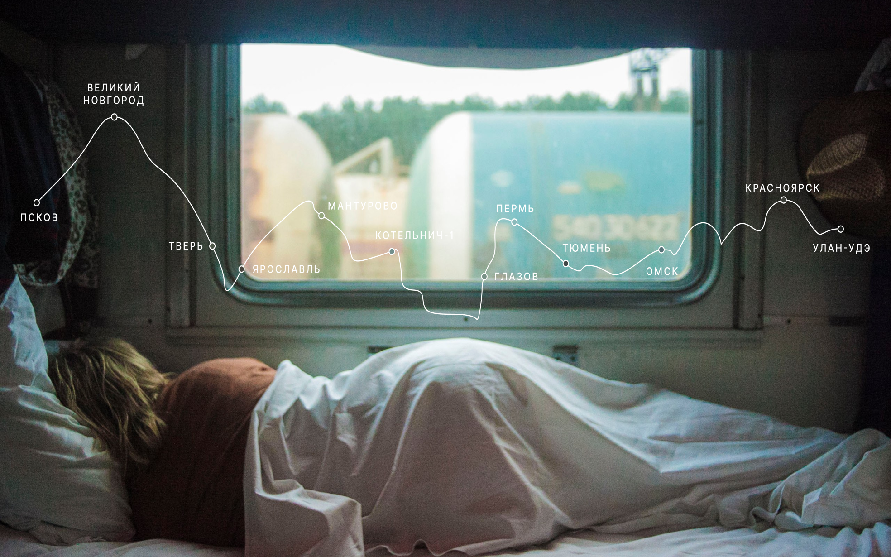
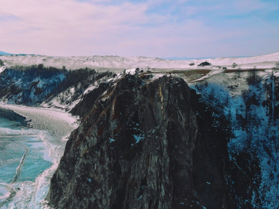
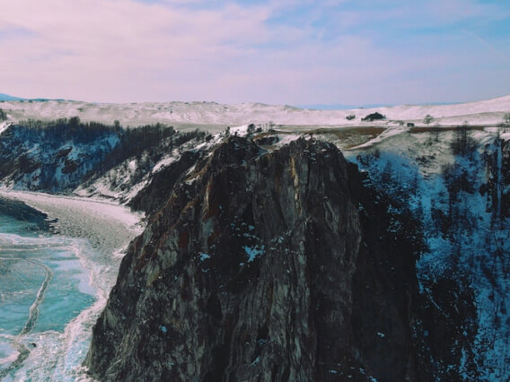

Путешествия по России
Настоящая страна не в выпусках новостей, а здесь.

ваша полка — верхняя
Чего мы там не видели?
По опросам ВЦИОМ, 95% россиян мечтают куда-нибудь поехать, но только
36% планируют провести отпуск в родной стране. Мол, чего мы тут, дома,
не видели? На самом деле, Россия — это целая вселенная с ласковым
морем юга, густыми лесами Саян и суровыми льдами плато Путорана. А ещё
увидеть все эти красоты можно без миллионов на счету, загранпаспорта и
многочасовых перелетов. Как, например, Вера Башмакова — смелая молодая
мама, которая взяла в охапку троих детей, усадила их в свою «Ладу» и
проехала 20 тысяч километров по родной стране. Мы выбрали и описали
некоторые интересные места, достойные вашего отпуска.
- Часовых поясов 11
-
Объектов природного наследия ЮНЕСКО 12
-
Объектов культурного наследия ЮНЕСКО 16
- Природных заповедников 105
- Аэропортов 241
Куршская коса

Здесь, посреди лесов и песчаных дюн, вы сможете увидеть
два водных горизонта — спокойного Куршского залива
с одной стороны и подёрнутого рябью волн Балтийского моря
с другой. Уникальная природная зона на краю российского
анклава.
На этом Калининградская область не заканчивается.
Для путешественника и исследователя там же
по соседству — самая западная точка России,
Балтийская коса, — и немецкое наследие россыпи
небольших приморских городов. Атмосфера здешних мест исключает
суету, окуная в спокойствие природы и запах стального,
прохладного моря.
Кольский

Почти весь полуостров находится за Полярным кругом. Саамская
тундра, от которой на юг — тайга,
а на север — Ледовитый океан, прикидывающийся
Баренцевым морем.
Возможно, вы смотрели Звягинцева и даже слышали историю
арктического фестиваля в Териберке. Возможно, слово
«Хибины» не осталось под снегом школьных
воспоминаний об уроках географии. Возможно, вы не
интересовались пронизывающей земную кору сверхглубокой скважиной,
а от апатитов вас давно накрывает апатия. Но ваша
мечта увидеть северное сияние начинает сбываться с билетом
в Мурманск.
Алтай

Алтай — одно из красивейших мест в России.
В первую очередь из-за гор: если ехать вдоль хребта, вы
увидите склоны, усыпанные соснами, горные реки и озёра.
А если вы откроете в автомобиле окна, сможете
познакомиться с невидимым чудом здешних мест — горным
воздухом.
Климат на Алтае умеренный, поэтому ехать сюда лучше всего
летом. Так вы увидите всё разнообразие местной флоры и фауны.
По лесам Алтая бродят лоси, над хребтами летают орлы,
а на равнинах пасутся косули. И знаменитые
манулы — тоже обитатели Алтайского края.
Зимний Байкал

Всем известен Байкал как крупнейшее озеро в мире. Многие
также знают, что это самый большой источник пресной воды
и одно из красивейших мест в России.
Конечно, это всё так. Но Байкал ещё идеальное место для
соревнований по скийорингу. Это такой вид спорта, когда
лыжник привязывает себя к мотоциклу, и тандем старается
развить как можно бóльшую скорость
на льду. В марте 2019 года на фестивале
«Байкальская миля» был поставлен мировой
рекорд —197.011 км/ч.
Карелия

Сибирь заканчивается не на Урале, а в Карелии:
образующая тайгу сибирская лиственница не растёт западнее
Водлозера. Зато здесь она вымахивает
на 30 метров — леса карельских национальных
парков из-за непроходимых болот никогда не знали топора.
Некоторым соснам уже больше чем полтысячелетия. Прикоснитесь
к живому существу, видевшему солнце раньше, чем увидал его
Иван Грозный. В девственном лесу на сотню километров
не встретишь тропы. А на редких тропинках деревья
в паре метров от земли помечены медвежьими когтями.
Чтобы все знали, кто тут хозяин.


 
